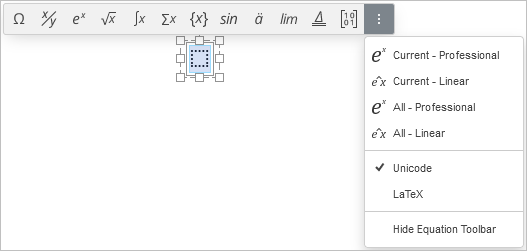
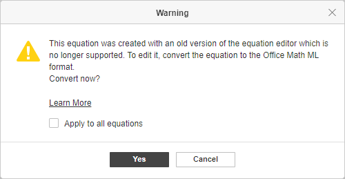

Umetnite jednačine
Presentation Editor vam omogućava da kreirate jednačine korišćenjem ugrađenih šablona, da ih uređujete i da umetnete posebne znakove (uključujući matematičke operatore, grčka slova, akcente itd.).
Dodajte novu jednačinu
Da biste umetnuli jednačinu iz galerije,
- postavite kursor na mesto gde želite da postavite jednačinu,
- prebacite se na karticu Insert na gornjoj alatnoj traci,
- kliknite na strelicu pored ikonice Equation na gornjoj alatnoj traci,
-
izaberite potrebnu kategoriju jednačina na traci iznad umetnute jednačine,
ili
u otvorenoj padajućoj listi izaberite kategoriju jednačina koja vam je potrebna.
Trenutno su dostupne sledeće kategorije: Symbols, Fractions, Scripts, Radicals, Integrals, Large Operators, Brackets, Functions, Accents, Limits and Logarithms, Operators, Matrices,
- kliknite na simbol Equation Settings na traci iznad umetnute jednačine da biste pristupili dodatnim podešavanjima, npr. Unicode ili LaTeX, Professional ili Linear,
- kliknite na odgovarajući simbol/jednačinu u odgovarajućem skupu šablona,
- da biste sakrili traku sa alatkama, kliknite na opciju Hide Equation Toolbar u okviru Equation Settings.

Izabrani simbol/jednačina biće umetnuti u centar trenutnog slajda.
Ako ne vidite ivicu okvira jednačine, kliknite bilo gde unutar jednačine – ivica će biti prikazana isprekidanom linijom. Okvir jednačine se može slobodno pomerati, menjati mu se veličina ili rotirati na slajdu. Da biste to uradili, kliknite na ivicu okvira jednačine (biće prikazana punom linijom) i koristite odgovarajuće ručice.
Svaki šablon jednačine predstavlja skup polja. Polje je mesto za svaki element koji čini jednačinu. Prazno polje (takođe se naziva i placeholder) ima tačkasti okvir . Potrebno je da popunite sva polja unosom potrebnih vrednosti.
Unesite vrednosti
Tačka unosa određuje gde će se pojaviti sledeći znak koji unesete. Da biste precizno postavili tačku unosa, kliknite unutar polja i koristite strelice na tastaturi da biste pomerali tačku unosa za jedan znak ulevo ili udesno.
Kada je tačka unosa postavljena, možete popuniti polje:
- unesite željenu numeričku/literalnu vrednost pomoću tastature,
- umetnite poseban znak koristeći paletu Symbols iz menija Equation na kartici Insert gornje alatne trake ili kucanjem sa tastature (pogledajte opis opcije Math AutoСorrect),
- dodajte još jedan šablon jednačine iz palete kako biste kreirali složenu ugnježdenu jednačinu. Veličina osnovne jednačine će se automatski prilagoditi njenom sadržaju. Veličina elemenata ugnježdene jednačine zavisi od veličine polja osnovne jednačine, ali ne može biti manja od veličine pod-podindeksa.
Za dodavanje novih elemenata jednačine možete koristiti i opcije menija desnog klika:
- Da biste dodali novi argument koji ide ispred ili iza postojećeg unutar Brackets, kliknite desnim tasterom miša na postojeći argument i izaberite opciju Insert argument before/after.
- Da biste dodali novu jednačinu unutar Cases sa više uslova iz grupe Brackets, kliknite desnim tasterom miša na prazno polje ili unetu jednačinu i izaberite opciju Insert equation before/after.
- Da biste dodali novi red ili kolonu u Matrix, kliknite desnim tasterom miša na polje unutar matrice, izaberite opciju Insert, a zatim Row Above/Below ili Column Left/Right.
Napomena: trenutno nije moguće unositi jednačine korišćenjem linearnog formata, npr. \sqrt(4&x^3).
Prilikom unosa vrednosti matematičkih izraza nije potrebno koristiti Spacebar, jer se razmaci između znakova i matematičkih operatora automatski postavljaju.
Ako je jednačina predugačka i ne može da stane u jedan red unutar tekstualnog okvira, automatsko prelamanje linija će se pojaviti tokom kucanja. Takođe možete umetnuti ručni prelaz u novi red na određenoj poziciji tako što ćete kliknuti desnim tasterom miša na matematički operator i izabrati opciju Insert manual break iz menija. Izabrani operator će započeti novi red. Da biste obrisali ručno dodat prelaz u novi red, kliknite desnim tasterom miša na matematički operator koji započinje novi red i izaberite opciju Delete manual break.
Formatirajte jednačine
Podrazumevano, jednačina unutar tekstualnog okvira je horizontalno centrirana i vertikalno poravnata uz vrh tekstualnog okvira. Da biste promenili horizontalno ili vertikalno poravnanje, postavite kursor unutar okvira jednačine (ivice tekstualnog okvira biće prikazane isprekidanim linijama) i koristite odgovarajuće ikonice na kartici Home gornje alatne trake.
Da biste povećali ili smanjili veličinu fonta jednačine, kliknite bilo gde unutar okvira jednačine i izaberite potrebnu veličinu fonta sa liste na kartici Home gornje alatne trake. Svi elementi jednačine će se odgovarajuće promeniti.
Slova u jednačini su podrazumevano iskošena. Po potrebi možete promeniti stil fonta (bold, italic, strikeout) ili boju za celu jednačinu ili njen deo. Stil underline može se primeniti samo na celu jednačinu, a ne na pojedinačne znakove. Izaberite potreban deo jednačine klikom i prevlačenjem. Izabrani deo će biti označen plavom bojom. Zatim koristite odgovarajuća dugmad na kartici Home gornje alatne trake da biste formatirali izbor. Na primer, možete ukloniti italic format za obične reči koje nisu promenljive ili konstante.
Za izmenu pojedinih elemenata jednačine možete koristiti i opcije menija desnog klika:
- Da biste promenili format Fractions, kliknite desnim tasterom miša na razlomak i izaberite opciju Change to skewed/linear/stacked fraction iz menija (dostupne opcije se razlikuju u zavisnosti od izabranog tipa razlomka).
- Da biste promenili položaj Scripts u odnosu na tekst, kliknite desnim tasterom miša na jednačinu koja sadrži skripte i izaberite opciju Scripts before/after text iz menija.
- Da biste promenili veličinu argumenata za Scripts, Radicals, Integrals, Large Operators, Limits and Logarithms, Operators, kao i za overbrace/underbrace i šablone sa grupišućim znakovima iz grupe Accents, kliknite desnim tasterom miša na argument koji želite da promenite i izaberite opciju Increase/Decrease argument size iz menija.
- Da biste odredili da li će se prikazivati prazno polje stepena kod Radical, kliknite desnim tasterom miša na radikal i izaberite opciju Hide/Show degree iz menija.
- Da biste odredili da li će se prikazivati prazno polje gornje/donje granice kod Integral ili Large Operator, kliknite desnim tasterom miša na jednačinu i izaberite opciju Hide/Show top/bottom limit iz menija.
- Da biste promenili položaj granica u odnosu na znak integrala ili operatora kod Integrals ili Large Operators, kliknite desnim tasterom miša na jednačinu i izaberite opciju Change limits location iz menija. Granice mogu biti prikazane desno od znaka operatora (kao indeks i stepen) ili direktno iznad i ispod znaka operatora.
- Da biste promenili položaj granica u odnosu na tekst kod Limits and Logarithms i šablona sa grupišućim znakovima iz grupe Accents, kliknite desnim tasterom miša na jednačinu i izaberite opciju Limit over/under text iz menija.
- Da biste izabrali koje će se Brackets prikazivati, kliknite desnim tasterom miša na izraz unutar njih i izaberite opciju Hide/Show opening/closing bracket iz menija.
- Da biste kontrolisali veličinu Brackets, kliknite desnim tasterom miša na izraz unutar njih. Opcija Stretch brackets je podrazumevano uključena kako bi se zagrade prilagođavale izrazu unutar njih, ali je možete isključiti da biste sprečili rastezanje zagrada. Kada je ova opcija aktivna, možete koristiti i opciju Match brackets to argument height.
- Da biste promenili položaj znaka u odnosu na tekst kod overbrace/underbrace ili overbar/underbar iz grupe Accents, kliknite desnim tasterom miša na šablon i izaberite opciju Char/Bar over/under text iz menija.
- Da biste izabrali koje će ivice biti prikazane kod Boxed formula iz grupe Accents, kliknite desnim tasterom miša na jednačinu i izaberite opciju Border properties iz menija, zatim izaberite Hide/Show top/bottom/left/right border ili Add/Hide horizontal/vertical/diagonal line.
- Da biste odredili da li će se prikazivati prazna polja kod Matrix, kliknite desnim tasterom miša na matricu i izaberite opciju Hide/Show placeholder iz menija.
Za poravnanje pojedinih elemenata jednačine možete koristiti i opcije menija desnog klika:
- Da biste poravnali jednačine unutar Cases sa više uslova iz grupe Brackets, kliknite desnim tasterom miša na jednačinu, izaberite opciju Alignment iz menija, a zatim izaberite tip poravnanja: Top, Center ili Bottom.
- Da biste vertikalno poravnali Matrix, kliknite desnim tasterom miša na matricu, izaberite opciju Matrix Alignment iz menija, a zatim izaberite tip poravnanja: Top, Center ili Bottom.
- Da biste horizontalno poravnali elemente unutar kolone Matrix, kliknite desnim tasterom miša na placeholder unutar kolone, izaberite opciju Column Alignment iz menija, a zatim izaberite tip poravnanja: Left, Center ili Right.
Obrišite elemente jednačine
Da biste obrisali deo jednačine, izaberite deo koji želite da obrišete prevlačenjem miša ili držanjem tastera Shift i korišćenjem strelica na tastaturi, a zatim pritisnite taster Delete.
Polje se može obrisati samo zajedno sa šablonom kome pripada.
Da biste obrisali celu jednačinu, kliknite na ivicu okvira jednačine (biće prikazana punom linijom) i pritisnite taster Delete.
Za brisanje pojedinih elemenata jednačine možete koristiti i opcije menija desnog klika:
- Da biste obrisali Radical, kliknite desnim tasterom miša na njega i izaberite opciju Delete radical iz menija.
- Da biste obrisali Subscript i/ili Superscript, kliknite desnim tasterom miša na izraz koji ih sadrži i izaberite opciju Remove subscript/superscript iz menija. Ako izraz sadrži skripte koje se nalaze ispred teksta, dostupna je opcija Remove scripts.
- Da biste obrisali Brackets, kliknite desnim tasterom miša na izraz unutar njih i izaberite opciju Delete enclosing characters ili Delete enclosing characters and separators iz menija.
- Ako izraz unutar Brackets sadrži više argumenata, kliknite desnim tasterom miša na argument koji želite da obrišete i izaberite opciju Delete argument iz menija.
- Ako Brackets obuhvataju više jednačina (npr. Cases sa više uslova), kliknite desnim tasterom miša na jednačinu koju želite da obrišete i izaberite opciju Delete equation iz menija.
- Da biste obrisali Limit, kliknite desnim tasterom miša na njega i izaberite opciju Remove limit iz menija.
- Da biste obrisali Accent, kliknite desnim tasterom miša na njega i izaberite opciju Remove accent character, Delete char ili Remove bar iz menija (dostupne opcije zavise od izabranog akcenta).
- Da biste obrisali red ili kolonu u Matrix-u, kliknite desnim tasterom miša na placeholder unutar reda/kolone koju želite da obrišete, izaberite opciju Delete iz menija, a zatim Delete Row/Column.
Konvertujte jednačine
Ako otvorite postojeći dokument koji sadrži jednačine kreirane u starijoj verziji editora (na primer u MS Office verzijama pre 2007), potrebno je da konvertujete te jednačine u Office Math ML format kako biste mogli da ih uređujete.
Da biste konvertovali jednačinu, dvaput kliknite na nju. Pojaviće se upozorenje:

Da biste konvertovali samo izabranu jednačinu, kliknite na dugme Yes. Da biste konvertovali sve jednačine u ovom dokumentu, označite polje Apply to all equations i kliknite na Yes.
Kada je jednačina konvertovana, možete je uređivati.